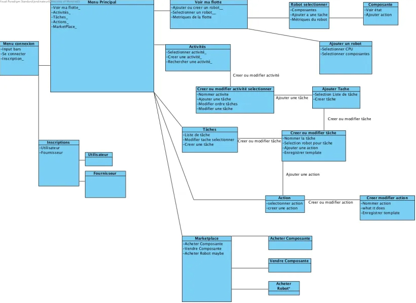

3. Cas d'utilisation (50%)
Pour les cas d'utilisions, nous avons d'abord établi un diagramme de classe (Menus uniquement) afin que ceux-ci presente une
cohérence pour la navigation des menus.

Voici nos 10 cas d'utilisations :
Cas d'utilisation : S'inscrire comme utilisateur.
But : Une personne souhaite s’inscrire en tant qu’utilisateur de robotix.
Préconditions : Le client fournit son nom, son prénom, son pseudo (qui doit être unique), son adresse courriel et son numéro de téléphone ainsi que le nom de la compagnie pour mieux le rediriger.
Acteurs : Client (principal), Système (secondaire).
Scénario principal :
1. Le client se rend sur l’interface du logiciel pour s’inscrire
2. Le client selectionne "S'inscrire comme Utilisateur"
3. l’interface lui demande ses informations.
4. Le client entre ses données dans le système.
4.1 Utilisateur rentre son nom.
4.2 Utilisateur rentre son email.
4.3 Utilisateur rentre son numero de telephone.
5. Le système valide les informations
6. Le système exige que le client lise et signe les conditions d’utilisations
7. L'utilisateur accepte les conditions d'utilisations.
8. Le système confirme la création du compte auprès du client
8.1 Le client peut entrer en tant qu’utilisateur.
Scénarios alternatifs :
2a. S'inscrire comme fournisseur.
1. Le fournisseur selectionne "S'inscrire comme Fournisseur"
2. l’interface lui demande ses informations.
3. Le fournisseur entre ses données dans le système.
4.1 Fournisseur rentre son nom.
4.2 Fournisseur rentre son email.
4.3 Fournisseur rentre le nom de la compagnie.
4.4 Fournisseur rentre email de la compagnie.
4.5 Fournisseur rentre son numero de telephone.
4.6 Fournisseur rentre numero de telephone de la compagnie.
4.7 Fournisseur rentre capacité de fabrication.
5. Le système valide les informations
6. Le système exige que le client lise et signe les conditions d’utilisations
7. L'utilisateur accepte les conditions d'utilisations.
8. Le système confirme la création du compte auprès du client
8.1 Le client peut entrer en tant qu’utilisateur.
4a. Certaines informations sont jugées incorrectes.
1 .Le système envoie un message d’erreur
2. Le scénario reprend à l'étape 3.
4b. Les informations sont correctes mais déjà utilisées par un autre utilisateur
1. Le système envoie un message d’erreur
2. Le scénario reprend à l'étape 3.
6a. Le client refuse de signer les conditions d'utilisations
1. Le scénario se termine.
Postconditions : Le système traite les besoins de l’utilisateur tant qu’il respecte les conditions d’utilisations.
Cas d'utilisation : Enregistrer un robot.
But : L'utilisateur souhaite ajouter un robot à sa flotte.
Préconditions :
- L'utilisateur est authentifié chez Robotix en utilisant son courriel et mot de passe.
- Le compte de l'utilisateur ne peut être suspendu.
- L'utilisateur possède le numéro de série, le nom et le type du robot.
- L'utilisateur possède au moins un CPU.
Acteurs : Utilisateur (principal), Fournisseur, Système (secondaire).
Scénario principal :
1. Le client se connecte à son compte
2. Le client accède à la consultation de sa flotte et sélectionne l'option de créer un nouveau robot
3. Le client demande le numéro de série auprès du fournisseur
4. Le client entre ce numéro dans le système ainsi que le nom et le type du robot qui identifient le robot.
5. Le client selectionne les composantes qu'il souhaite pour son nouveau robot.
6. Le système valide les informations
7. Le système confirme l’enregistrement du robot auprès du client
5.1 Le client peut gérer son robot et accéder aux fonctionnalités affiliées.
Scénarios alternatifs :
1a. L’utilisateur se trompe dans l'entrée du numéro de série du robot.
1. Le système envoie un message d’erreur
2. Le scénario reprend à l'étape 3.
2a. Le nom du robot et le type du robot (qui servent d’identifiant) sont déjà utilisés.
1. Le système envoie un message d’erreur
2. Le scénario reprend à l'étape 3.
3a. Le client n’a pas de compte Robotix
1. Le scénario se termine
Postconditions : Le système effectue toute les opérations demandées par l’utilisateur en lien avec le robot.
Cas d'utilisation : Acheter des composantes.
But : Un utilisateur souhaite acheter les composantes d’un robot .
Préconditions :
- L'utilisateur est authentifié chez Robotix en utilisant son courriel et mot de passe.
- Le compte de l'utilisateur ne peut être suspendu.
- L'utilisateur possède l’argent nécessaire pour acheter une composante.
Acteurs : Utilisateur (principal), un ou plusieurs fournisseurs (secondaire).
Scénario principal :
1. Le client se connecte à son compte
2. Le client accède au Marketplace et sélectionne l'option pour acheter des composantes
3. Le client contacte le fournisseur
2.1 l’utilisateur accède aux offres de composantes
4. Le client achète les composantes qu’il a choisit .
5. Le système valide l’achat et envoie le reçu à l'utilisateur
6. Le système sauvegarde les nouvelles composantes
Scénarios alternatifs :
6a. L’utilisateur n’a pas assez d’argent pour acheter une composante.
1. .Le fournisseur envoie un message d’erreur
2. Le scénario reprend à l'étape 2.1.
Postconditions : Le système a sauvegardé les nouvelles composantes sur le compte de l’utilisateur.
Cas d'utilisation : Vendre des composantes
But : Ce cas d'utilisation permet à un fournisseur de vendre ses robots et ses pièces en affichant une annonce de vente sur le marché Robotix.
Préconditions :
- Le fournisseur est authentifié chez Robotix en utilisant son courriel, mot de passe et le nom de son entreprise.
- Le compte du fournisseur ne peut être suspendu.
- Le fournisseur doit avoir des robots ou des pièces en stock avant d'afficher une annonce.
Acteurs : Fournisseur sur le système Robotix (principal), Système Robotix permettant la vente (secondaire).
Scénario principal :
1. Le fournisseur accède au système Robotix en utilisant son courriel, mot de passe et le nom de son entreprise.
2. Le fournisseur sélectionne l'option "Afficher Marketplace" sur l'écran d'accueil.
3. Le système affiche la page d'accueil Marketplace et le menu de l'extension Marketplace Robotix.
4. Le fournisseur sélectionne l'option "Vendre" dans l'interface du système.
5. Le système affiche le formulaire de création d'annonce sur le marché Robotix avec les champs suivants :
5.1 Nom du produit.
5.2 Catégorie.
5.3 Spécifications (type, couleur, année de fabrication, compatibilité, numéro de série, etc.).
5.4 Description du produit (500 char. maximum).
5.5 Quantité en stock.
5.6 Emplacement du produit.
5.7 Frais de livraison (si applicable).
6. Le fournisseur saisit les informations requises et soumet le formulaire de création d'annonce.
7. Le système vérifie les préconditions :
7.1 Authentification réussie.
7.2 Compte non suspendu.
7.3 Quantité en stock non-nulle.
8. Si toutes les préconditions sont remplies, le système enregistre l'annonce avec les détails fournis.
9. Le système affiche un message de confirmation de la création de l'annonce.
Scénarios alternatifs :
4.a L'utilisateur souhaite plutôt modifier une annonce :
1. L'utilisateur sélectionne l'option "Modifier une annonce existante" dans l'interface du système.
2. Le système affiche le formulaire de modification d'annonce sur le marché Robotix avec les mêmes champs :
2.1 Nom du produit.
2.2 Catégorie.
2.3 Spécifications (type, couleur, année de fabrication, compatibilité, numéro de série, etc.).
2.4 Description du produit (500 char. maximum).
2.5 Quantité en stock.
2.6 Emplacement du produit.
2.7 Frais de livraison (si applicable).
3. L'utilisateur saisit ses nouvelles informations et soumet le formulaire.
4. Le système vérifie les préconditions :
4.1 Authentification réussie.
4.2 Compte non suspendu.
4.3 Quantité en stock non-nulle.
5. Si toutes les préconditions sont remplies, le système enregistre l'annonce avec les nouveaux détails fournis.
6. Le système affiche un message de confirmation de la modification de l'annonce.
7.a Préconditions non respectées.
1. Le système informe le fournisseur.
2. Sortie du programme.
Postconditions :
- Le système a sauvegardé l'annonce du fournisseur.
- Le système ajoute l'annonce du fournisseur sur la plateforme pour qu'elle soit visible aux utilisateurs.
Cas d'utilisation : Création des actions
But : Créer une action pouvant être ajouté à une tâche.
Préconditions : Le client a un compte robotix.
Acteurs : Utilisateur (principal), Système (secondaire).
Scénario principal :
1. Le client se connecte à son compte.
2. Du menu principal, il accède selectionne "Afficher les actions".
3. Il sélectionne l'option "Créer une action".
4. Le menu de création d'action s'affiche.
4.1 Nommer l'action.
4.2 Spécifier type d'action.
4.3 Assigner robot à l'action.
5. Retour au menu des actions.
Scénarios alternatifs :
2.a Création d'une action via la création ou modification d'une tâche.
1. L'utilisateur selectionne "Afficher les taches".
2. L'utilisateur selectionne "Creer une tache".
3. Le client sélectionne "Ajouter une action".
4. Le client sélectionne "Créer une action".
5. Le menu de création d'action s'affiche.
5.1. Nommer l'action.
5.2. Spécifier type d'action.
5.3. Assigner robot à l'action.
5.4. Enregistrer action pour qu'elle soit disponible lors des sélections.
1.a.6. L'action est ajoutée à la tâche sélectionnée.
Postconditions : Une action est enregistrée dans les favoris et/ou ajoutée à la tâche sélectionnée.
Cas d'utilisation : S’inscrire à une activité.
But : Inscription à une activité.
Préconditions : Le client a un compte robotix et un robot pouvant
effectuer les tâches/actions requises.
Acteurs : Client (principal), Système (secondaire).
Scénario principal :
1. Le client se connecte à son compte.
2. Du menu principal, il accède au menu des activités.
3. Du menu des activités, il sélectionne “Rechercher une activité”.
4. Les activités disponibles s’affichent.
4.1 Filtrage par nom.
4.2 Filtrage par date.
4.3 Filtrage par popularité.
4.3 Filtrage par ”Avoir un robot conforme”.
5. La fiche complète de l’activité sélectionnée est affichée.
6. L'utilisateur sélectionne “S’inscrire”.
7. L'utilisateur sélectionne son ou ses robots participants.
Scénarios alternatifs :
1.a L’utilisateur ne possède pas un robot conforme à l’activité.
1.a.1. Débute à l’étape 5 du scenario principal.
1.a.2. L'utilisateur sélectionne “S’inscrire”.
1.a.3. Un message d’erreur s’affiche avertissant qu’aucun robot conforme n’est disponible.
1.a.4. Retour à l’étape 5 du scenario principal.
Postconditions : L’utilisateur figure maintenant parmi les participants de la fiche complète de l’activité.
L’activité est maintenant visible dans le menu “Activités” de l’utilisateur.
Cas d'utilisation : Création des tâches
But : Ce cas d'utilisation permet à l'utilisateur de créer des tâches afin de les assigner à des robots spécifiques en fonction de leur disponibilité et de leurs compétences.
Préconditions :
- L'utilisateur est authentifié chez Robotix en utilisant son courriel et mot de passe.
- Le compte de l'utilisateur ne peut être suspendu.
- L'utilisateur doit avoir au moins un robot dans sa flotte.
- L'utilisateur doit avoir des actions pré-définies et compatibles avec ses robots.
Acteurs : Utilisateur du système Robotix (principal), Système Robotix permettant la gestion (secondaire).
Scénario principal :
1. L'utilisateur accède au système Robotix en utilisant son courriel et mot de passe.
2. L'utilisateur sélectionne l'option "Afficher les tâches" sur l'écran d'accueil.
3. Le système affiche la liste des tâches en cours de l'utilisateur ainsi que le menu des tâches.
4. L'utilisateur sélectionne l'option "Créer une tâche" sur le menu des tâches.
5. Le système affiche le menu de création de tâche avec les champs suivants :
5.1 Nom de la tâche.
5.2 Séquence d'action (e.g., se déplacer, diffuser des sons, parler, écouter, afficher du texte ou des graphiques).
6. L'utilisateur saisit ses informations et soumet le formulaire.
7. Le système vérifie les préconditions :
7.1 Authentification réussie.
7.2 Compte non suspendu.
7.3 Flotte non-vide.
7.4 Actions prédéfinies et compatibles.
8. Si toutes les préconditions sont remplies, le système enregistre la tâche avec les détails fournis.
9. Le système affiche un message de confirmation de l'ajout de la tâche de l'utilisateur.
Scénarios alternatifs :
4.a L'utilisateur souhaite plutôt modifier une tâche :
1. L'utilisateur sélectionne l'option "Modifier une tâche" sur le menu des tâches.
2. Le système affiche le menu de création de tâche avec les champs suivants :
2.1 Nom de la tâche.
2.2 Séquence d'action (e.g., se déplacer, diffuser des sons, parler, écouter, afficher du texte ou des graphiques).
3. L'utilisateur saisit ses nouvelles informations et soumet le formulaire.
4. Le système vérifie les préconditions :
4.1 Authentification réussie.
4.2 Compte non suspendu.
4.3 Flotte non-vide.
4.4 Actions prédéfinies et compatibles.
5. Si toutes les préconditions sont remplies, le système enregistre la tâche avec les nouveaux détails fournis.
6. Le système affiche un message de confirmation de la modification de la tâche de l'utilisateur.
6.a Séquence d'actions incompatibles entre elles (ex: nager sous l'eau et parler en même temps).
1. Le système informe l'utilisateur.
2. L'utilisateur doit modifier la séquence d'action ou annuler sa demande.
7.a Préconditions non respectées.
1. Le système informe l'utilisateur.
2. Sortie du programme.
Postconditions :
- Le système sauvegarde la tâche.
- Le système ajoute la tâche à la liste de tâches de l'utilisateur.
Cas d'utilisation : Afficher les métriques de ma flotte
But : Ce cas d'utilisation permet à l'utilisateur de consulter les métriques de sa flotte (nombre de robots disponibles, état général, utilisation globale).
Préconditions :
- L'utilisateur est authentifié chez Robotix en utilisant son courriel et mot de passe.
- Le compte de l'utilisateur ne peut être suspendu.
- L'utilisateur doit avoir au moins un robot dans sa flotte.
Acteurs : Utilisateur du système Robotix (principal), Système Robotix permettant la consultation (secondaire).
Scénario principal :
1. L'utilisateur accède au système Robotix en utilisant son courriel et mot de passe.
2. L'utilisateur sélectionne l'option "Afficher ma flotte" sur l'écran d'accueil.
3. Le système affiche la liste des robots de l'utilisateur ainsi que le menu de la flotte.
4. L'utilisateur sélectionne l'option "Afficher les métriques de ma flotte" sur le menu de la flotte.
5. Le système affiche les métriques de la flotte de l'utilisateur (nombre de robots disponibles, état général, utilisation globale).
Scénarios alternatifs :
5.a L'utilisateur souhaite consulter l'état d'un robot en particulier :
1. L'utilisateur sélectionne le robot de son choix.
2. Le système affiche les métriques du robot sélectionné.
Postconditions :
- Le système a affiché les métriques de la flotte de l'utilisateur.
Cas d'utilisation : Création d'activités
But : Ce cas d'utilisation permet à l'utilisateur de créer des activités individuelles ou collaboratives pour faire participer leur flotte de robot et collaborer avec d'autres utilisateurs.
Préconditions :
- L'utilisateur est authentifié chez Robotix en utilisant son courriel et mot de passe.
- Le compte de l'utilisateur ne peut être suspendu.
- L'utilisateur doit avoir au moins un robot dans sa flotte.
- Les robots de l'utilisateur doivent avoir les capacités nécessaires à la réalisation de l'activité.
Acteurs : Utilisateur du système Robotix (principal), Système Robotix permettant la gestion (secondaire).
Scénario principal :
1. L'utilisateur accède au système Robotix en utilisant son courriel et mot de passe.
2. L'utilisateur sélectionne l'option "Afficher les activités" sur l'écran d'accueil.
3. Le système affiche la liste des activités en cours de l'utilisateur ainsi que le menu des activités.
4. L'utilisateur sélectionne l'option "Créer une activité" sur le menu des activités.
5. Le système affiche le menu de création d'activité avec les champs suivants :
5.1 Nom de l'activité.
5.2 Type d'activité :
5.2.1 Jeux (Jouer à des jeux et des activités ludiques avec les utilisateurs offrant des heures de divertissement et de plaisir.)
5.2.2 Éducation (Enseigner différentes compétences peu importe l'âge des utilisateurs.)
5.2.3 Création (Créer des objets réels ou virtuels en utilisant des outils numériques puis, générer les objets créés avec l'impression 3D.)
5.3 Format :
5.3.1 Individuelle
5.3.2 Collaborative
5.3.2.1 Nombre de participants
6. L'utilisateur saisit ses informations et soumet le formulaire.
7. Le système vérifie les préconditions :
7.1 Authentification réussie.
7.2 Compte non suspendu.
7.3 Flotte non-vide.
7.4 Robots ont les capacités nécessaires pour l'activité.
8. Si toutes les préconditions sont remplies, le système enregistre l'activité avec les détails fournis.
9. Le système affiche un message de confirmation de la création de l'activité de l'utilisateur.
Scénarios alternatifs :
4.a L'utilisateur souhaite plutôt modifier une activité :
1. L'utilisateur sélectionne l'option "Modifier une activité" sur le menu des activités.
2. Le système affiche le menu de modification d'activité avec les champs suivants :
2.1 Nom de l'activité.
2.2 Type d'activité :
2.2.1 Jeux (Jouer à des jeux et des activités ludiques avec les utilisateurs offrant des heures de divertissement et de plaisir.)
2.2.2 Éducation (Enseigner différentes compétences peu importe l'âge des utilisateurs.)
2.2.3 Création (Créer des objets réels ou virtuels en utilisant des outils numériques puis, générer les objets créés avec l'impression 3D.)
2.3 Format :
2.3.1 Individuelle
2.3.2 Collaborative
2.3.2.1 Nombre de participants
3. L'utilisateur saisit ses nouvelles informations et soumet le formulaire.
4. Le système vérifie les préconditions :
4.1 Authentification réussie.
4.2 Compte non suspendu.
4.3 Flotte non-vide.
4.4 Robots ont les capacités nécessaires pour l'activité.
5. Si toutes les préconditions sont remplies, le système enregistre l'activité avec les nouveaux détails fournis.
6. Le système affiche un message de confirmation de la modification de l'activité de l'utilisateur.
6.a Format incompatible avec type d'activité.
1. Le système informe l'utilisateur.
2. L'utilisateur doit modifier le format ou le type d'activité ou annuler sa demande.
7.a Préconditions non respectées.
1. Le système informe l'utilisateur.
2. Sortie du programme.
Postconditions :
- Le système sauvegarde l'activité.
- Le système ajoute l'activité à la liste des activités de l'utilisateur.
Cas d'utilisation : Trouver un fournisseur
But : Ce cas d'utilisation permet à un utilisateur qui souhaite faire l'achat de pièces de trouver un fournisseur sur le marché Robotix en naviguant à travers la liste des fournisseurs enregistrés en utilisant un mécanisme de recherche et de filtre facilitant la localisation de fournisseurs spécifiques.
Préconditions :
- L'utilisateur est authentifié chez Robotix en utilisant son courriel et mot de passe.
- Le compte de l'utilisateur ne peut être suspendu.
Acteurs : Utilisateur du système Robotix (principal), Système Robotix permettant la recherche (secondaire).
Scénario principal :
1. L'utilisateur accède au système Robotix en utilisant son courriel et mot de passe.
2. L'utilisateur sélectionne l'option "Afficher Marketplace" sur l'écran d'accueil.
3. Le système affiche la page d'accueil Marketplace et le menu de l'extension Marketplace Robotix.
4. L'utilisateur sélectionne l'option "Trouver un fournisseur" dans l'interface du système.
5. Le système affiche une liste des fournisseurs favoris de la plateforme avec les détails suivants :
5.1 Ancienneté.
5.2 Code de satisfaction des clients.
5.3 Nombre de visites sur la page.
5.4 Nombre de transactions.
6. L'utilisateur saisit le nom du fournisseur qu'il recherche dans le mécanisme de recherche.
7. Le système affiche le fournisseur correspondant à la recherche ainsi que ses détails.
Scénarios alternatifs :
5.a Aucun fournisseur n'est enregistré sur la plateforme.
1. Le système informe l'utilisateur.
2. Sortie du programme.
5.b Le fournisseur recherché figure déjà dans la liste.
1. L'utilisateur a trouvé le fournisseur qu'il cherchait et peut le sélectionner.
2. Sortie du programme.
6.a L'utilisateur ne connaît pas le nom du fournisseur qu'il cherche.
1. L'utilisateur utilise le mécanisme de filtre (numéro de pièce, type de pièce, emplacement du fournisseur).
2. Le système affiche le fournisseur correspondant à la recherche ainsi que ses détails.
Postconditions :
- Le système a affiché le fournisseur correspondant à la recherche de l'utilisateur ainsi que ses détails.
- Le système ajoute le fournisseur dans l'historique de recherche de l'utilisateur.
- Le système augmente la popularité du fournisseur (nombre de visites sur sa page).